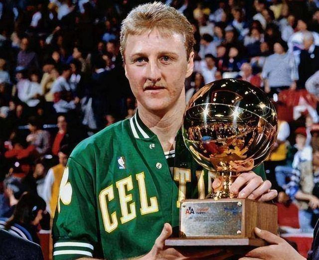
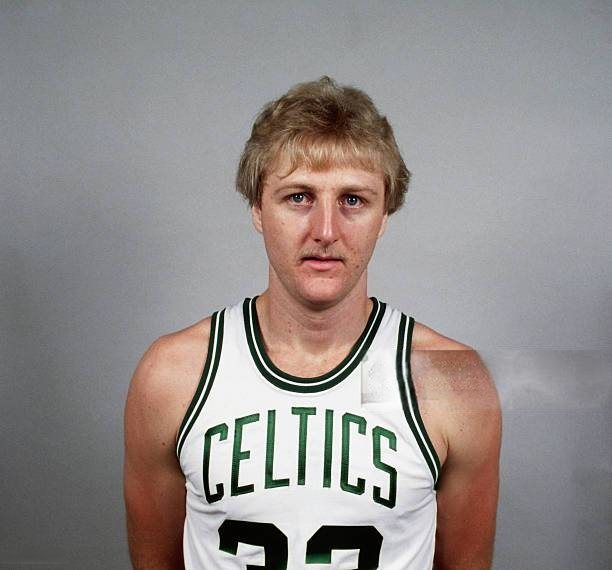

Larry Bird
 Larry Bird played from 1979 to 1992 and is widely regarded as one of the greatest forwards in NBA history. Known for his incredible shooting, clutch performances, and basketball IQ, he led the Boston Celtics to three championships and defined a generation of basketball.
Career Achievements:
- NBA Championships: 3 (1981, 1984, 1986)
- NBA Most Valuable Player (MVP) Awards: 3 (1984, 1985, 1986)
- NBA Finals MVP Awards: 2 (1984, 1986)
- NBA All-Star Appearances: 12 (1980–1988, 1990–1992)
- NBA All-NBA First Team: 9 times
- NBA All-Defensive Second Team: 3 times
- NBA Rookie of the Year: 1980
- NBA Three-Point Shootout Champion: 3 times (1986–1988)
All-Time Rankings:
- Points: 21,791 (38th All-Time) – 24.3 PPG
- Rebounds: 8,974 (47th All-Time) – 10.0 RPG
- Assists: 5,695 (45th All-Time) – 6.3 APG
- Free Throw Percentage: 88.6% (Top 10 All-Time)
- Triple-Doubles: 59 (8th All-Time)
- Field Goal Percentage: 49.6%
Single-Game Records:
- Most Points in a Game: 60 (March 12, 1985, vs Atlanta Hawks)
- Triple-Doubles in One Season: 10 (1986–87 season)
Notable Career Feats:
- Only forward in NBA history to win 3 straight MVPs (1984–1986)
- Member of the 50-40-90 club twice (1987, 1988)
- Named to NBA's 50th and 75th Anniversary Teams
Hall of Fame Induction:
- 1998: Larry Bird was inducted into the Naismith Memorial Basketball Hall of Fame